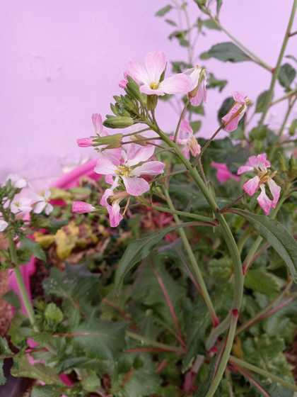
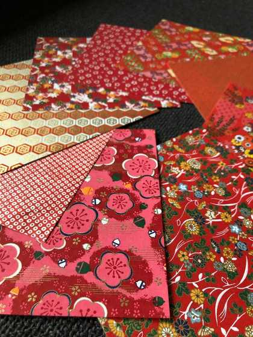
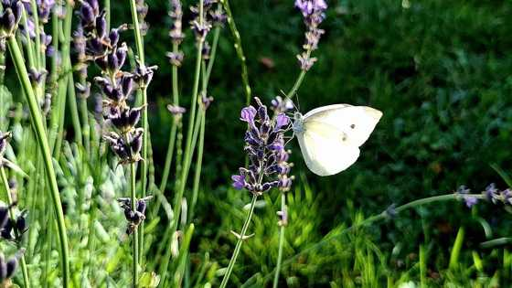
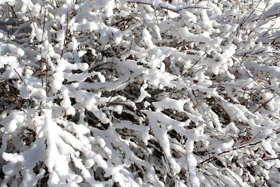
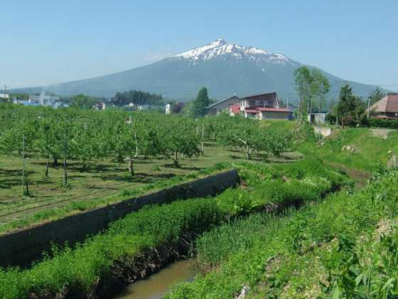
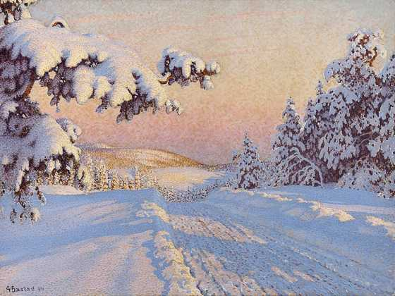

青森県黒石市 ネイルサロン
自分らしさを、
指先にそっと。
爪屋 Anelaは、黒石・弘前エリアのお客さまに向けて「自分らしさを指先に」を掲げる、プライベートネイルサロンです。
お店のこと
指先は、いちばん身近な自己表現。
Instagramのプロフィールによると、爪屋 Anelaは黒石市にあるプライベートサロンで、「自分らしさを指先に」という言葉を掲げています。黒石・弘前のネイルとして紹介されており、18時以降のご希望は問い合わせで相談を受け付けているとのことです。
お客さまそれぞれの「らしさ」を、小さな指先のキャンバスに映す。この試作ページでは、その考え方を、やわらかなラベンダーとあんず色で表現しました。
上記以外の言い回しは制作側の表現です。店名「Anela」の意味・由来は確認できていないため、記載していません。


口コミ
こんなお声が届くサロンを目指して(イメージ)
イメージ例
自分の好みをゆっくり聞いてもらえて、仕上がった爪を見るたびに気分が上がります。
イメージ例
落ち着いた雰囲気で、おしゃべりしながらあっという間の時間でした。
イメージ例
季節に合わせたデザインを相談できて、毎回の楽しみになっています。
上記は制作側が作成したイメージ例で、実在のお客さまの声ではありません。



アクセス
黒石市追子野木にあります。
| 所在地 | 青森県黒石市追子野木２丁目１９４ |
|---|---|
| 電話 | 準備中 |
| 営業時間 | Instagramには「9:00〜18:00・不定休」との記載があります(最新情報はInstagramでご確認ください)。18時以降のご希望は問い合わせ。 |
| 価格 | 準備中 |
| SNS | Instagram @anela.nail_ |